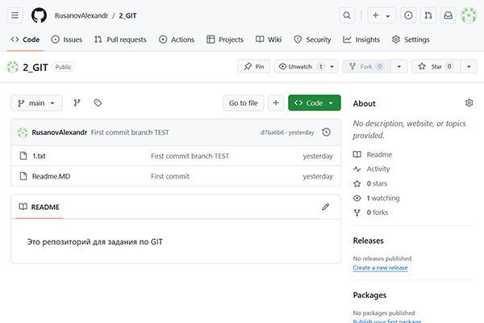

Проект "Работа с GIT"
Описание проекта
- Задача: Изучить основы работы с Git и зафиксировать изменения в репозитории.
- Создать новый локальный Git-репозиторий.
- Инициализировать репозиторий и настроить необходимые конфигурации.
- Создать новый файл в репозитории.
- Добавить файл в область хранения.
- Зафиксировать изменения с помощью значимого сообщения о фиксации.
- Внести дополнительные изменения в файл и зафиксировать их.
- Создайте новую ветку и переключитесь на нее.
- Внесите изменения в новую ветку и зафиксируйте их.
- Объедините новую ветку с основной веткой.-Переместить локальный репозиторий в удаленный репозиторий (например, GitHub или GitLab).Результат работы выложите в виде ссылки на git
Использованные технологии и инструменты
Файлы проекта на GitHub
